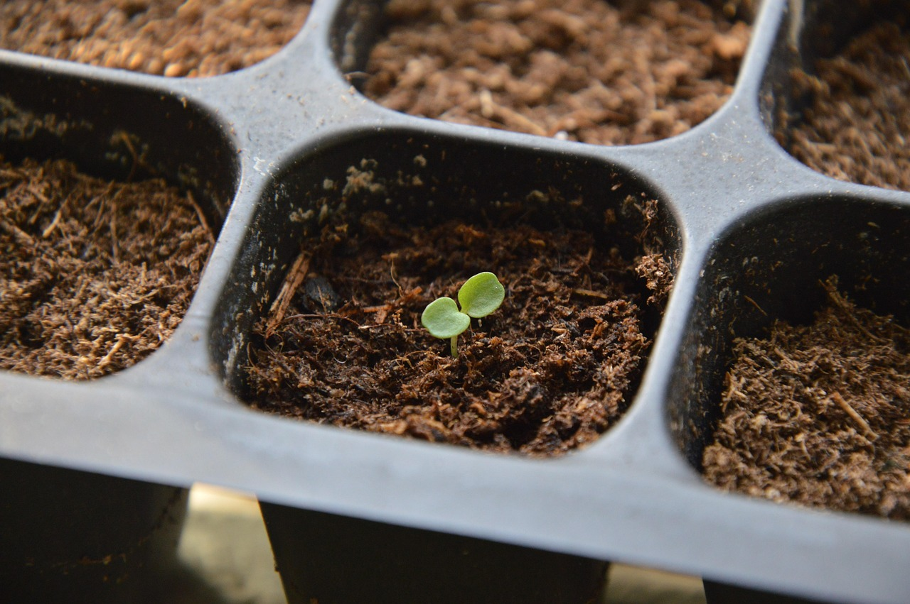

Cultivating Your Local Garden: Create Seedlings with Dev Containers and Devbox

Background
I've been planting development environments for over a decade, and like choosing between heirloom or hybrid seeds.
Goals
It's all about consistency, reproducibility, and avoiding dependency hell. We want to create a consistent, reproducible local development environment that works the same for everyone on the team, regardless of their local machine's quirks.
Preparing the Soil: Why Dev Containers and Devbox Matter
Today we're going to plant a seedling in our local garden. We'll start with the soil preparation - creating consistent, reproducible local development environments with Dev Containers and Devbox. Then we'll plant a simple Go application, before we move on to cultivating a full Kubernetes ecosystem with ArgoCD.
Seedling Selection: Understanding Dev Containers and Devbox
Think of Dev Containers as biodegradable seed starter pots. They provide an isolated, consistent environment where your application seedlings can germinate without being affected by the peculiarities of your local soil (operating system). The Dev Containers spec aims to standardize how these seed pots are constructed, so no matter what gardening tools (IDE) you're using, your seeds will sprout the same way.
Devbox, on the other hand, is like a premium seed starting mix - it provides all the nutrients (tools and dependencies) your seedlings need in exactly the right proportions. Built on Nix packages, it ensures everyone on your team is using identical tools with identical versions.
Together, they provide precisely what we need: predictable, reproducible environments that work the same for everyone on the team, regardless of their local machine's quirks.
Tool Selection: Setting Up Our Garden
Before we start planting, let's gather our tools. You'll need:
- Docker (for running containers)
- Git (for retrieving our sample code)
- A terminal (your garden trowel)
- VS Code (optional but recommended)
Let's get our hands dirty!
Preparing the Soil: Initial Setup
First, let's create a directory for our project:
mkdir garden-sample
cd garden-sample
Alternatively, if you prefer to use a sample repository, you can clone it (note: you'll need to create this repository or use an existing one):
git clone https://github.com/s33d-innovations/garden-sample
cd garden-sample
Now, let's install Devbox, which will help us manage all our tools:
# For macOS/Linux users
curl -fsSL https://get.jetify.com/devbox | bash
# For Windows users with PowerShell
irm https://get.jetify.com/devbox/install.ps1 | iex
You can verify that Devbox is installed correctly by checking its version:
devbox version
Planting the First Seeds: Creating Our Development Environment
Now that we have our tools, let's create a devbox.json file that defines all the tools we'll need for our project:
devbox init
This creates a basic devbox.json file. We can now add packages one by one using the devbox add command:
# Add Go
devbox add go
# Add kubectl
devbox add kubectl
# Add kind
devbox add kind
# Add ArgoCD
devbox add argocd
# Add Kubernetes Helm
devbox add kubernetes-helm
# Add jq
devbox add jq
Each of these commands will download and install the latest version of the package. If you need a specific version, you can specify it like devbox add go@1.22.3.
Let's check our devbox.json file to see what was created:
cat devbox.json
You should see something like:
{
"packages": [
"go@latest",
"kubectl@latest",
"kind@latest",
"argocd@latest",
"kubernetes-helm@latest",
"jq@latest"
],
"shell": {
"init_hook": [
"echo 'Welcome to devbox!' > /dev/null"
],
"scripts": {
"test": [
"echo \"Error: no test specified\" && exit 1"
]
}
}
}
Let's update the init_hook to display a more gardening-themed message:
# You can edit the file directly, or use a text editor of your choice
sed -i '' 's/echo '"'"'Welcome to devbox!'"'"' > \/dev\/null/echo '"'"'Your garden tools are ready!'"'"'/g' devbox.json
Let's activate our tools:
devbox shell
You should now have access to all these tools, isolated from your system's global installations. Think of it as having a perfect set of garden tools in a clean shed, separate from all the other tools in your garage.
Alternatively, you can run commands directly using devbox run:
# Check Go version
devbox run -- go version
# Check kubectl version
devbox run -- kubectl version --client
# Check kind version
devbox run -- kind --version
From Seedlings to Starter Pots: Creating a Dev Container
Now, let's use Devbox to generate a Dev Container configuration:
devbox generate devcontainer --force
This creates a .devcontainer directory with two important files:
devcontainer.json- The "recipe" for our container environmentDockerfile- Instructions for building the container image
Let's examine these files:
# List the contents of the .devcontainer directory
ls -la .devcontainer
# View the devcontainer.json file
cat .devcontainer/devcontainer.json
You'll see something like:
{
"name": "Devbox Remote Container",
"build": {
"dockerfile": "./Dockerfile",
"context": ".."
},
"customizations": {
"vscode": {
"settings": {},
"extensions": [
"jetpack-io.devbox"
]
}
},
"remoteUser": "devbox"
}
And the Dockerfile:
cat .devcontainer/Dockerfile
Looks like:
FROM jetpackio/devbox:latest
# Installing your devbox project
WORKDIR /code
USER root:root
RUN mkdir -p /code && chown ${DEVBOX_USER}:${DEVBOX_USER} /code
USER ${DEVBOX_USER}:${DEVBOX_USER}
COPY --chown=${DEVBOX_USER}:${DEVBOX_USER} devbox.json devbox.json
COPY --chown=${DEVBOX_USER}:${DEVBOX_USER} devbox.lock devbox.lock
RUN devbox run -- echo "Installed Packages." && nix-store --gc && nix-store --optimize
RUN devbox shellenv --init-hook >> ~/.profile
Note that the Docker image name has changed from jetpackio/devbox:latest to jetify-com/devbox:latest in newer versions of Devbox.
Germination: Running Our Dev Container
There are two main ways to start working within our Dev Container:
Option 1: Using VS Code (Recommended for beginners)
If you have VS Code installed with the Dev Containers extension:
- Open VS Code
- Open the command palette (Ctrl+Shift+P or Cmd+Shift+P)
- Select "Dev Containers: Open Folder in Container"
- Navigate to your project folder
VS Code will build and start the container, then open an integrated environment with all your tools ready to use.
Option 2: Using Devpod
For a more flexible approach that works with multiple IDEs, we can use Devpod:
# Install Devpod
curl -fsSL https://devpod.sh/install.sh | bash
# Add the Kubernetes provider (for later in our series)
devpod provider add kubernetes
# Start our environment
devpod up .
This will build your container, set up the environment, and connect your preferred editor.
Testing Our Seedlings: Verifying Our Setup
Let's make sure everything is working by running a few commands in our container's terminal:
# Check Go version
go version
# Check kubectl version
kubectl version --client
# Check kind version
kind --version
You should see output confirming that all your tools are installed at the versions specified in your devbox.json.
Transplanting: Creating a Simple Go Application
Now that our environment is ready, let's create a simple Go application that we'll eventually deploy to Kubernetes. We'll create a directory structure like this:
garden-sample/
├── app/
│ ├── go.mod
│ └── main.go
└── go.work
Let's start by creating the app directory and the main Go file:
# Create the app directory
mkdir -p app
# Create the Go application file
cat > app/main.go << 'EOF'
package main
import (
"fmt"
"net/http"
"os"
)
func main() {
http.HandleFunc("/", func(w http.ResponseWriter, r *http.Request) {
hostname, _ := os.Hostname()
fmt.Fprintf(w, "Hello from s33d! I'm a seedling running on %s\n", hostname)
})
port := os.Getenv("PORT")
if port == "" {
port = "8080"
}
fmt.Printf("Server starting on port %s...\n", port)
http.ListenAndServe(":"+port, nil)
}
EOF
Now, let's initialize a Go module for our application:
# Navigate to the app directory
cd app
# Create a go.mod file
echo 'module example.com/seedling
go 1.24
' > go.mod
# Verify the go.mod file was created
cat go.mod
# Return to the project root
cd ..
Next, we need to create a Go workspace file to help Go find our module. This is important when working with Go modules in subdirectories:
# Create a go.work file in the project root
echo 'go 1.24
use ./app
' > go.work
Now we can build and run the application using Devbox:
# Build the application from the project root
devbox run -- go build -o seedling ./app
# Run the application
devbox run -- ./seedling
If you encounter Go version compatibility issues, you may need to update your go.mod and go.work files to match the Go version provided by Devbox:
# Check your Go version
devbox run -- go version
# Update your go.mod file accordingly
# For example, if Devbox provides Go 1.24.1:
echo 'module example.com/seedling
go 1.24
' > app/go.mod
# Also update your go.work file
echo 'go 1.24
use ./app
' > go.work
Once the application is running, open your browser to http://localhost:8080, and you should see your seedling's greeting!
Why This Approach? Solving Real Problems
You might be wondering: why go through all this trouble? Couldn't I just install Go and Kubernetes tools directly on my machine?
Here's where our gardening metaphor illuminates the benefits:
-
Soil Consistency: Just like different plots of soil can have vastly different pH levels, nutrient content, and drainage properties, different developer machines can have conflicting dependencies, incompatible versions, and unique configurations. Dev Containers ensure everyone is working with identical soil conditions.
-
Seed Preservation: When you package your development environment with your code, you're essentially preserving the exact conditions that your seeds (application) need to sprout. Five years from now, someone can still clone your repo and have exactly the same environment you used to develop it.
-
Sustainable Gardening: By isolating your tools per project, you avoid the "dependency hell" that can occur when different projects need different versions of the same tools. It's like having separate garden beds for plants with different soil needs.
-
Transplant Readiness: Our goal is to eventually transplant these seedlings to Kubernetes. By developing in containers from the start, we ensure our application is container-ready from day one.
What's Next: From Seedling to Garden
In the next post, we'll create a local Kubernetes cluster using Kind, and start preparing the ground for deploying our application with ArgoCD. We'll see how these seedlings we've planted today grow into a full development workflow that mirrors production environments.
Remember
Good gardeners know that proper soil preparation is the foundation of a successful garden. Similarly, well-crafted development environments are the foundation of successful software projects.
Stay tuned as we continue to cultivate our garden, moving from these simple seedlings to a lush, integrated ecosystem of services and tools!
Troubleshooting
Go Module Not Found Issues
If you encounter errors like go: cannot find main module, but found .git/config in /path/to/your/repo, it means Go can't find your module. This typically happens when you're trying to build from a directory that doesn't contain a go.mod file or isn't part of a Go workspace:
# Create a go.work file in your current directory
echo 'go 1.24
use ./app
' > go.work
# Now try building again
devbox run -- go build -o seedling ./app
Go Version Compatibility Issues
If you encounter errors like compile: version "go1.23.4" does not match go tool version "go1.24.1", you need to update your go.mod file to match the Go version provided by Devbox:
# Check your Go version
devbox run -- go version
# Update your go.mod file accordingly
echo 'module example.com/seedling
go 1.24
' > app/go.mod
# Also update your go.work file if you have one
echo 'go 1.24
use ./app
' > go.work
Devbox Shell Not Working
If you have trouble with the devbox shell command, you can use devbox run to execute commands within the Devbox environment:
# Instead of entering a shell and running commands
devbox run -- <command>
# For example
devbox run -- go build -o seedling
Package Installation Issues
If you encounter issues installing packages, you can try:
# Update Devbox
devbox version update
# Clear Devbox cache
devbox nix gc
Docker Container Issues
If you have issues with the Dev Container:
# Rebuild the container
devbox generate devcontainer --force
# Check Docker is running
docker info
Have questions or need help with your development environment? Reach out on bluesky!